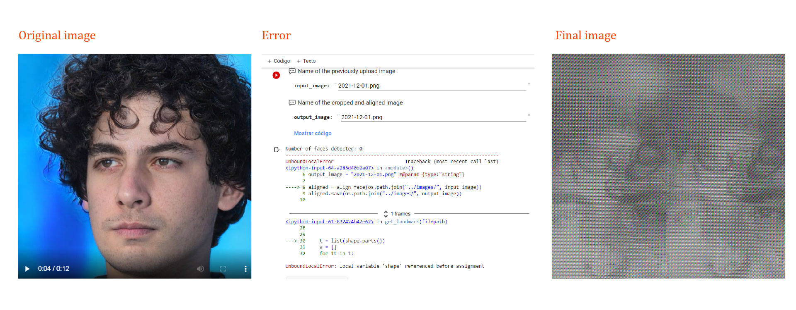
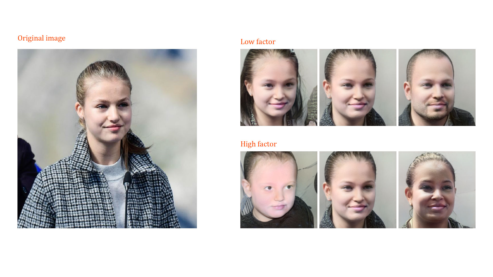

From the network we can see how it creates new images of people that do not exist. As a context, the effectiveness of the network is based on how it is trained. Although we can see some errors in some images, we can also identify that they could be real people even if they do not exist today, perhaps at some point in history they did.
In the image uploading exercise, I wanted to try an experiment and upload an image that the network itself created. Actually, it was a screenshot.
It started by creating this image, and some errors. But in the end it didn't create any other image and it was just an error. We don't know where or why in the programming or network connections that happens.
After all, we uploaded another picture to test and it worked.
Some painting